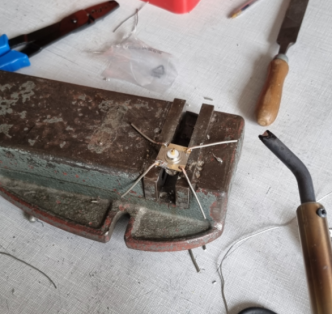
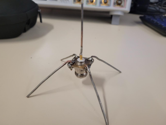

Design et réalisation de l'antenne « atelier » : antenne spider

L’antenne « atelier » doit répondre à plusieurs spécifications :
Elle doit être adaptée à l’impédance caractéristique du cordon coaxial (i.e. 50 Ohms)
Elle doit être adaptée à la bande de fréquence du signal WIFI (i.e. ROS < 2 sur la bande WIFI)
Elle doit avoir un diagramme d’antenne de type isotrope (i .e. un gain faible)
Réalisation de l'antenne
